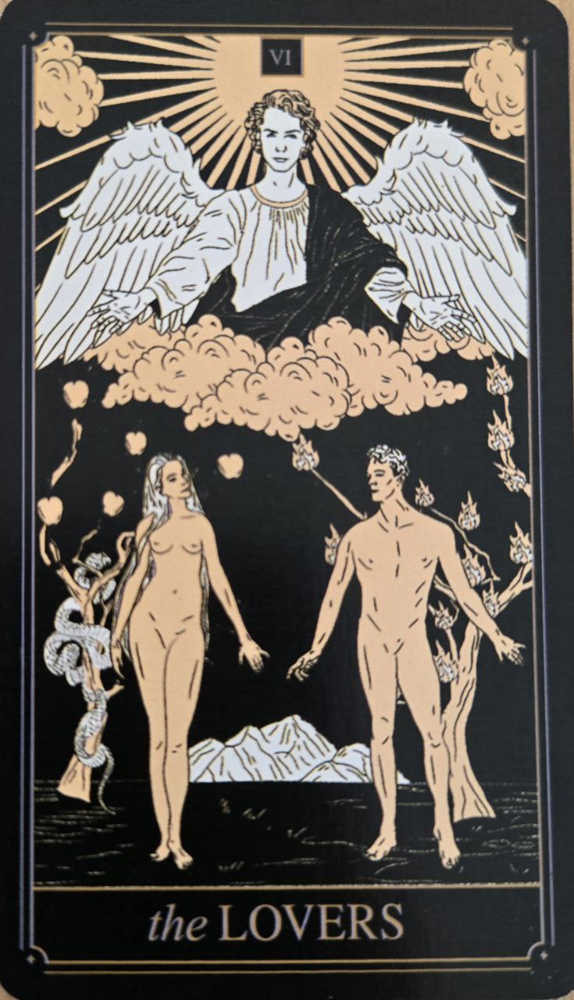

Milenci sú kartou spojenia, vzťahov a dôležitých rozhodnutí. Hoci si ju mnohí spájajú predovšetkým s romantickou láskou, jej význam siaha oveľa ďalej. Predstavuje okamih, keď človek stojí pred voľbou, ktorá ovplyvní jeho ďalšiu cestu.
Táto karta pripomína, že skutočne významné rozhodnutia nevychádzajú len z logiky, ale aj z hodnôt, emócií a osobného presvedčenia.
Milenci symbolizujú harmóniu, partnerstvo a vedomú voľbu. Často sa objavujú v situáciách, kde je potrebné nájsť rovnováhu medzi rôznymi možnosťami alebo časťami vlastnej osobnosti.
Karta naznačuje, že správne rozhodnutie býva v súlade s tým, kým človek skutočne je, nie s tým, čo od neho očakávajú ostatní.
Na karte sa zvyčajne nachádzajú dve postavy stojace pod ochranou anjela alebo vyššej sily. Tento obraz symbolizuje spojenie, dôveru a vzájomné pochopenie.
Prírodné prvky v pozadí často predstavujú rast, život a dôsledky rozhodnutí, ktoré človek robí.
Napriek svojmu názvu nie je táto karta iba o láske. V mnohých výkladoch predstavuje predovšetkým voľbu a schopnosť prevziať zodpovednosť za vlastné rozhodnutia.